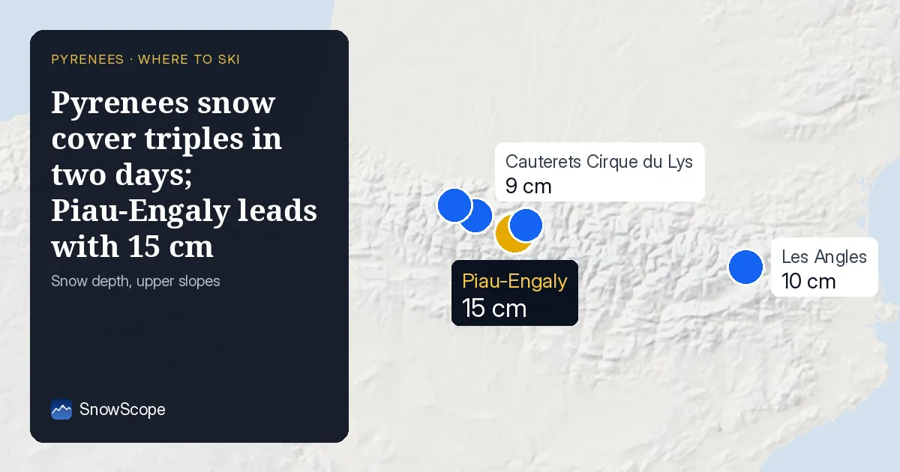

Pyrenees snow cover triples in two days; Piau-Engaly leads with 15 cm
The Pyrenees has seen a sharp shift: snow cover tripled in just two days, from 560 to 1,710 km². Piau-Engaly now has the deepest snow on upper slopes at 15 cm, with more coming this weekend.
See the live snow forecast for Piau-Engaly in the SnowScope appSnow depth, powder alerts and the 3D map, free.
Snow cover expands rapidly
Between November 17 and 19, the snow-covered area across the Pyrenees grew from 560 to 1,710 km². That is a jump of three times in two days. The number of resorts with measurable snow rose from 17 to 32 out of 53 in the region. This rapid spread reflects how storms push snow down from the highest peaks and fill more of the terrain.
| Resort | Snow depth | New snow, 72 h | Coming, next days | Top |
|---|---|---|---|---|
| Piau-Engaly | 15 cm | 13 cm | 17 cm | 2,527 m |
| Les Angles | 10 cm | 3 cm | 5 cm | 2,358 m |
| Cauterets Cirque du Lys | 9 cm | 8 cm | 22 cm | 2,420 m |
| Gourette | 9 cm | 8 cm | 20 cm | 2,453 m |
| Saint-Lary | 9 cm | 5 cm | 11 cm | 2,462 m |

Piau-Engaly leads, but snow is thin everywhere
Piau-Engaly holds 15 cm on its upper slopes (at 2,527 m), ahead of Cauterets Cirque du Lys and Gourette, both at 9 cm. At lower heights the picture is bleaker: Piau-Engaly's base at 1,762 m has no measurable snow yet. Station data confirm how thin the layer is. Boí at 2,537 m (November 18 measurement) held only 4 cm. Núria at 1,971 m showed 5 cm the same day.
Even at Piau-Engaly's mid-height (2,144 m), our model shows zero snow depth today, though 11 cm is forecast for the next seven days. This tells you that snow is arriving in small pulses and sitting mostly above 2,000 m.

Rain risk and freezing level this week
The freezing level—the height where precipitation switches from snow to rain—varies sharply. Today it sits between 2,030 and 2,240 m across the region. On November 21, it rises to between 2,180 and 3,130 m at Piau-Engaly, meaning rain will fall on middle slopes. By November 22, it drops back to 1,960 m. This yo-yo effect means snow that falls as rain on November 21 at mid-height will turn to snow again on Saturday.
What is coming: 22 cm more at Cauterets by Saturday
Forecast models show significant snow arriving for the weekend. Cauterets Cirque du Lys is forecast to pick up 22 cm over the next three days, most of it on November 22. Piau-Engaly will add 17 cm, and Gourette 20 cm. By November 22, the region-wide snow-covered area is modelled to reach 3,160 km², nearly double today's extent. Resorts with snow will number 36 of 53.
Water equivalent matters here: thin early-season snow is light and settles. A 15 cm layer holds less water than it appears, and rocks and bare ground still show through where slopes face south.
Avalanche risk and station context
Avalanche danger is rated level 1 (low) across all major resorts today, with hazard mostly from isolated wet slabs on warming slopes. Station data from November 18 show fresh snow across elevations: 3 cm fell at Vielha-Elipòrt (1,029 m), 5 cm at Núria (1,971 m), and 4 cm at Boí (2,537 m). These measurements anchor our model estimates and show the snow fell over the whole region, not just at high peaks.
Tips for skiers
- Ski above 2,000 m to find the best snow depth. Upper slopes at Piau-Engaly and Cauterets hold more than lower terrain.
- Check the official Météo-France avalanche bulletin before going off-piste, even with current low danger; stability can change as rain falls on November 21.
- Expect rocks to show through on south-facing slopes below 2,100 m; north-facing slopes and gullies will hold snow better.
- Watch the forecast for Saturday (November 22): most new snow is due then. Friday may bring rain on middle slopes due to the high freezing level.
- Early-season snow is thin and settles fast. Use measure and probe in unfamiliar terrain to check depth before committing to steep slopes.
About these numbers
Resort snow depths are the deepest snow on the resort's upper slopes from the SnowScope snow model (about 1 km, run of 18 November); they are estimates for an area, not a measurement at one point. Station values are measurements on the date shown. Forecasts can change. Always read the official avalanche bulletin before going off-piste.
Official avalanche bulletins: Météo-France – Bulletin d'estimation du risque d'avalanche
Cite this report
For research, teaching or the press: the numbers and charts are free to reuse under CC BY 4.0 with this citation.
SnowScope (2026), Pyrenees snow cover triples in two days; Piau-Engaly leads with 15 cm, https://snowscope.app/blog/en/2026/11/pyrenees-piau-engaly-snow-depth-today-19-november-2026.html, accessed 2026-11-19
SnowScope (Atlas Labs). (2026, November 19). Pyrenees snow cover triples in two days; Piau-Engaly leads with 15 cm. SnowScope snow reports. https://snowscope.app/blog/en/2026/11/pyrenees-piau-engaly-snow-depth-today-19-november-2026.html
BibTeX
@misc{snowscope2026pyreneespiauengalysnowde,
author = {{SnowScope (Atlas Labs)}},
title = {Pyrenees snow cover triples in two days; Piau-Engaly leads with 15 cm},
year = {2026},
month = nov,
howpublished = {\url{https://snowscope.app/blog/en/2026/11/pyrenees-piau-engaly-snow-depth-today-19-november-2026.html}},
note = {Published 2026-11-19 11:19 UTC; accessed 2026-11-19}
}· CC BY 4.0 · Methods, data and tools →
Piau-Engaly: snow and temperature by height, this winter vs last (tools) →
Follow Piau-Engaly
Free: a message when fresh snow is coming, and the forecast every morning.
More snow reports

Piau-Engaly leads the forecast with 37 cm of new snow by 13 November; 24 cm is expected on 12 November.

Compare Grandvalira and Spanish resorts in December 2026 for snow depths, lift heights, and prices starting from 49.00 EUR.

Today's maps look two weeks ahead in the Pyrenees, 13 November to 26 November. They come from the two global models that reach two weeks, ECMWF and …